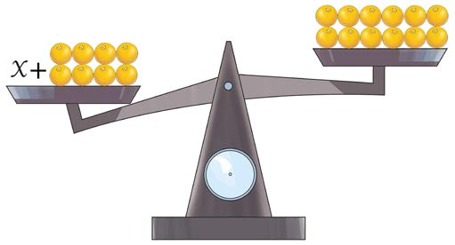

Mfano wa kwanza
Herufi x inawakilisha idadi ya machungwa yanayohitajika ili pande mbili za mizani ziwe sawa. Je, ni machungwa mangapi yanayowakilishwa na herufi x, ikiwa machungwa yanalingana uzani.

Ili pande mbili za mizani ziwe sawa, yanahitajika machungwa manne zaidi upande wa kushoto. Kwa hiyo, mitajo ya aljebra ambayo inazingatia usawa wa thamani upande wa kulia na kushoto kwa kutumia kigeu, inaitwa milinganyo.